2025 Advanced Higher Physics questions
Source: Scottish Qualifications Authority (SQA) / Qualifications Scotland. This is a StemInteract HTML companion, not an official HTML edition. Selectable text is supplied alongside original page images. Use the images or original PDF for equations, powers, fractions, vector notation, tables and diagrams; text extraction cannot fully preserve mathematical layout.
Jump to a question
PDF page 1
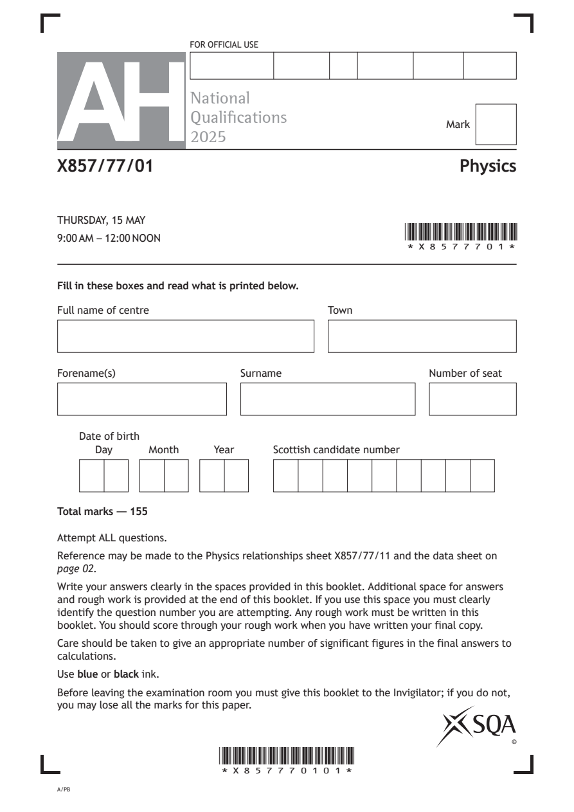
Selectable page text
FOR OFFICIAL USE
AH
National
Qualications
Mark
2025
X857/77/01 Physics
THURSDAY, 15 MAY
9:00 AM – 12:00 NOON
*X8577701*
Fill in these boxes and read what is printed below.
Full name of centre Town
Forename(s) Surname Number of seat
Date of birth
Day Month Year Scottish candidate number
Total marks — 155
Attempt ALL questions.
Reference may be made to the Physics relationships sheet X857/77/11 and the data sheet on
page 02.
Write your answers clearly in the spaces provided in this booklet. Additional space for answers
and rough work is provided at the end of this booklet. If you use this space you must clearly
identify the question number you are attempting. Any rough work must be written in this
booklet. You should score through your rough work when you have written your final copy.
Care should be taken to give an appropriate number of significant figures in the final answers to
calculations.
Use blue or black ink.
Before leaving the examination room you must give this booklet to the Invigilator; if you do not,
you may lose all the marks for this paper.
©
*X857770101*
A/PBPDF page 2
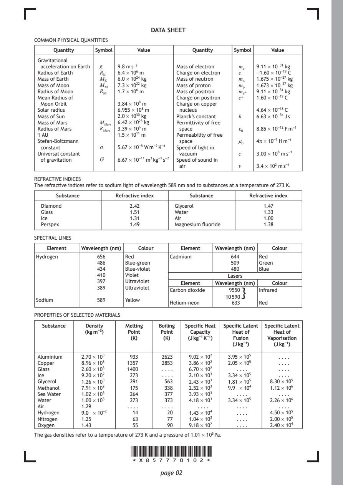
Selectable page text
DATA SHEET
COMMON PHYSICAL QUANTITIES
Quantity Symbol Value Quantity Symbol Value
Gravitational
acceleration on Earth g 9.8 m s⁻² Mass of electron mₑ 9.11 × 10⁻³¹ kg
Radius of Earth R_{E} 6.4 × 10⁶ m Charge on electron e −1.60 × 10⁻¹⁹ C
Mass of Earth M_{E} 6.0 × 10²⁴ kg Mass of neutron mₙ 1.675 × 10⁻²⁷ kg
Mass of Moon M_{M} 7.3 × 10²² kg Mass of proton mₚ 1.673 × 10⁻²⁷ kg
Radius of Moon R_{M} 1.7 × 10⁶ m Mass of positron mₑ⁺ 9.11 × 10⁻³¹ kg
Mean Radius of Charge on positron e⁺ 1.60 × 10⁻¹⁹ C
Moon Orbit 3.84 × 10⁸ m Charge on copper
Solar radius 6.955 × 10⁸ m nucleus 4.64 × 10⁻¹⁸ C
Mass of Sun 2.0 × 10³⁰ kg Planck’s constant h 6.63 × 10⁻³⁴ J s
Mass of Mars M_{M}ₐᵣₛ 6.42 × 10²³ kg Permittivity of free
Radius of Mars R_{M}ₐᵣₛ 3.39 × 10⁶ m space ε₀ 8.85 × 10⁻¹² F m⁻¹
1 AU 1.5 × 10¹¹ m Permeability of free
Stefan-Boltzmann space μ₀ 4π × 10⁻⁷ H m⁻¹
constant σ 5.67 × 10⁻⁸ W m⁻² K⁻⁴ Speed of light in
Universal constant vacuum c 3.00 × 10⁸ m s⁻¹
of gravitation G 6.67 × 10⁻¹¹ m³ kg⁻¹ s⁻² Speed of sound in
air v 3.4 × 10² m s⁻¹
REFRACTIVE INDICES
The refractive indices refer to sodium light of wavelength 589 nm and to substances at a temperature of 273 K.
Substance Refractive index Substance Refractive index
Diamond 2.42 Glycerol 1.47
Glass 1.51 Water 1.33
Ice 1.31 Air 1.00
Perspex 1.49 Magnesium fluoride 1.38
SPECTRAL LINES
Element Wavelength (nm) Colour Element Wavelength (nm) Colour
Hydrogen 656 Red Cadmium 644 Red
486 Blue-green 509 Green
434 Blue-violet 480 Blue
410 Violet Lasers
397 Ultraviolet
Element Wavelength (nm) Colour
389 Ultraviolet
Carbon dioxide 9550} Infrared
10 590
Sodium 589 Yellow
Helium-neon 633 Red
PROPERTIES OF SELECTED MATERIALS
Substance Density Melting Boiling Specific Heat Specific Latent Specific Latent
(kg m⁻³) Point Point Capacity Heat of Heat of
(K) (K) (J kg⁻¹ K⁻¹) Fusion Vaporisation
(J kg⁻¹) (J kg⁻¹)
Aluminium 2.70 × 10³ 933 2623 9.02 × 10² 3.95 × 10⁵ . . . .
Copper 8.96 × 10³ 1357 2853 3.86 × 10² 2.05 × 10⁵ . . . .
Glass 2.60 × 10³ 1400 . . . . 6.70 × 10² . . . . . . . .
Ice 9.20 × 10² 273 . . . . 2.10 × 10³ 3.34 × 10⁵ . . . .
Glycerol 1.26 × 10³ 291 563 2.43 × 10³ 1.81 × 10⁵ 8.30 × 10⁵
Methanol 7.91 × 10² 175 338 2.52 × 10³ 9.9 × 10⁴ 1.12 × 10⁶
Sea Water 1.02 × 10³ 264 377 3.93 × 10³ . . . . . . . .
Water 1.00 × 10³ 273 373 4.18 × 10³ 3.34 × 10⁵ 2.26 × 10⁶
Air 1.29 . . . . . . . . . . . . . . . . . . . .
Hydrogen 9.0 × 10⁻² 14 20 1.43 × 10⁴ . . . . 4.50 × 10⁵
Nitrogen 1.25 63 77 1.04 × 10³ . . . . 2.00 × 10⁵
Oxygen 1.43 55 90 9.18 × 10² . . . . 2.40 × 10⁴
The gas densities refer to a temperature of 273 K and a pressure of 1.01 × 10⁵ Pa.
*X857770102*
page 02PDF page 3

Selectable page text
[Turn over for next question
DO NOT WRITE ON THIS PAGE
*X857770103*
page 03PDF page 4
Question 1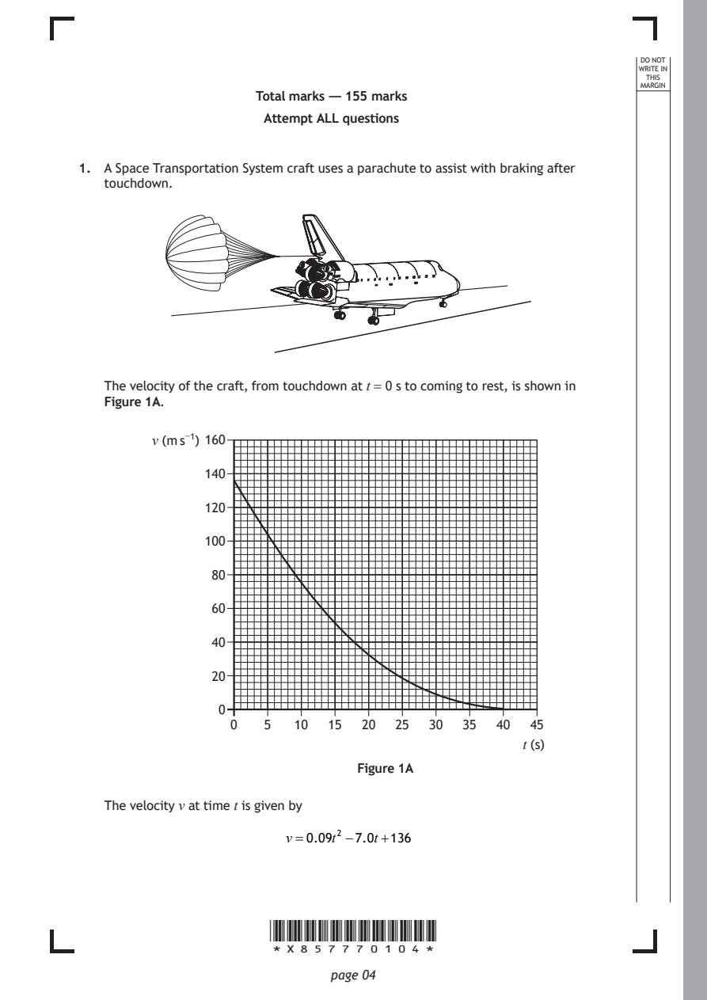
Selectable page text
DO NOT
WRITE IN
THIS
MARGIN
Total marks — 155 marks
Attempt ALL questions
1. A Space Transportation System craft uses a parachute to assist with braking after
touchdown.
The velocity of the craft, from touchdown at t = 0 s to coming to rest, is shown in
Figure 1A.
v (m s⁻¹) 160
140
120
100
80
60
40
20
0
0 5 10 15 20 25 30 35 40 45
t (s)
Figure 1A
The velocity v at time t is given by
v=0.09t² −7.0t+136
*X857770104*
page 04PDF page 5
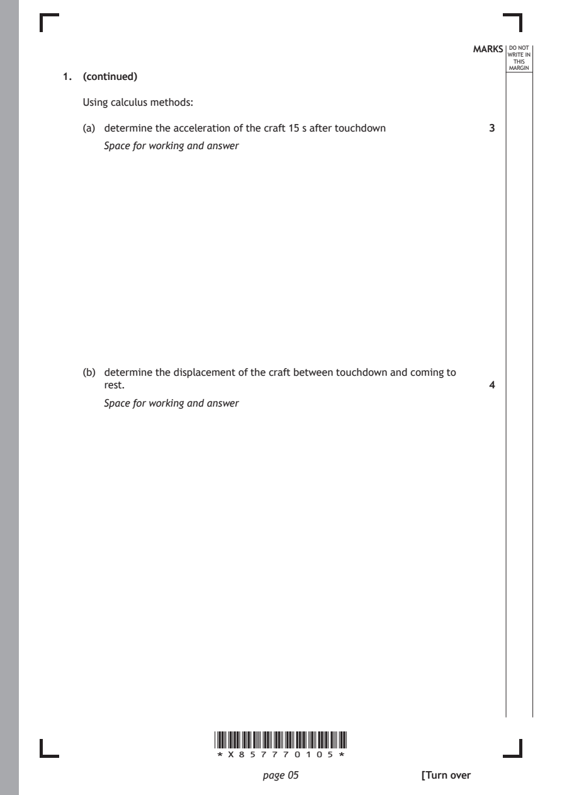
Selectable page text
MARKS _{W}^{D}_{R}^{O}_{I} _{T}^{N}OT
E IN
THIS
MARGIN
1. (continued)
Using calculus methods:
(a) determine the acceleration of the craft 15 s after touchdown 3
Space for working and answer
(b) determine the displacement of the craft between touchdown and coming to
rest. 4
Space for working and answer
*X857770105*
page 05 [Turn overPDF page 6
Question 2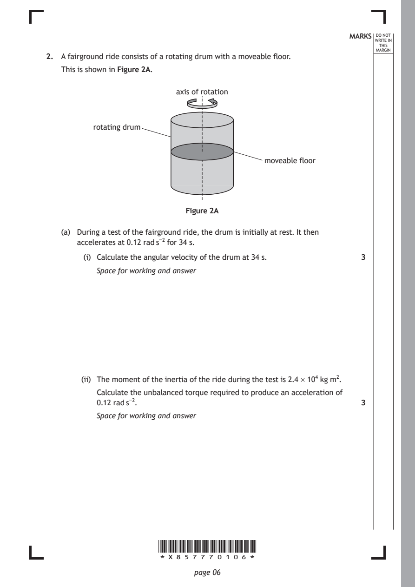
Selectable page text
MARKS _{W}^{D}_{R}^{O}_{I} _{T}^{N}OT
E IN
THIS
MARGIN
2. A fairground ride consists of a rotating drum with a moveable floor.
This is shown in Figure 2A.
axis of rotation
rotating drum
moveable floor
Figure 2A
(a) During a test of the fairground ride, the drum is initially at rest. It then
accelerates at 0.12 rad s⁻² for 34 s.
(i) Calculate the angular velocity of the drum at 34 s. 3
Space for working and answer
(ii) The moment of the inertia of the ride during the test is 2.4 × 10⁴ kg m².
Calculate the unbalanced torque required to produce an acceleration of
0.12 rad s⁻². 3
Space for working and answer
*X857770106*
page 06PDF page 7
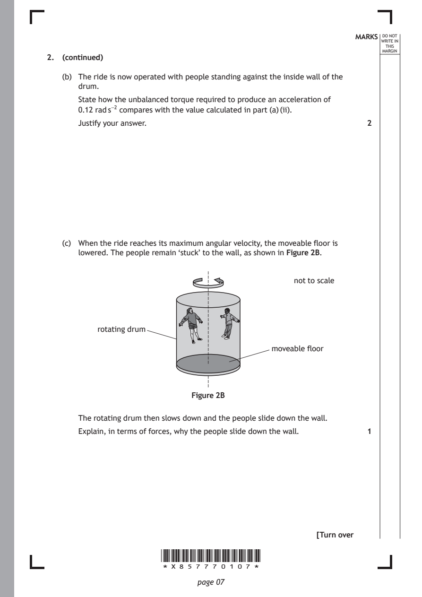
Selectable page text
MARKS _{W}^{D}_{R}^{O}_{I} _{T}^{N}OT
E IN
THIS
MARGIN
2. (continued)
(b) The ride is now operated with people standing against the inside wall of the
drum.
State how the unbalanced torque required to produce an acceleration of
0.12 rad s⁻² compares with the value calculated in part (a) (ii).
Justify your answer. 2
(c) When the ride reaches its maximum angular velocity, the moveable floor is
lowered. The people remain ‘stuck’ to the wall, as shown in Figure 2B.
not to scale
rotating drum
moveable floor
Figure 2B
The rotating drum then slows down and the people slide down the wall.
Explain, in terms of forces, why the people slide down the wall. 1
[Turn over
*X857770107*
page 07PDF page 8
Question 3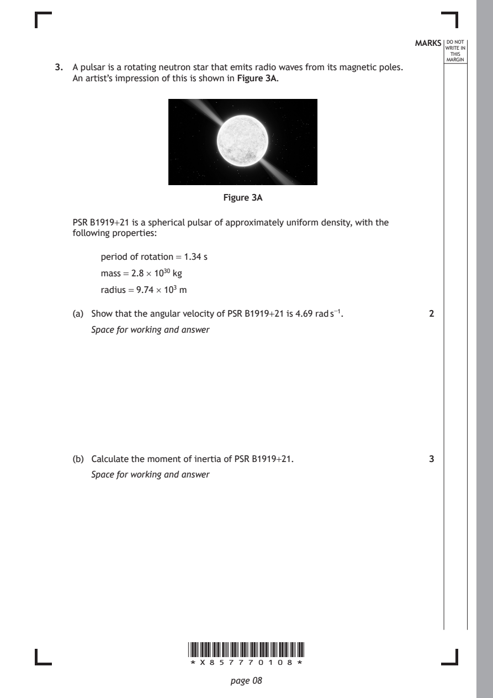
Selectable page text
MARKS _{W}^{D}_{R}^{O}_{I} _{T}^{N}OT
E IN
THIS
MARGIN
3. A pulsar is a rotating neutron star that emits radio waves from its magnetic poles.
An artist’s impression of this is shown in Figure 3A.
Figure 3A
PSR B1919+21 is a spherical pulsar of approximately uniform density, with the
following properties:
period of rotation = 1.34 s
mass = 2.8 × 10³⁰ kg
radius = 9.74 × 10³ m
(a) Show that the angular velocity of PSR B1919+21 is 4.69 rad s⁻¹. 2
Space for working and answer
(b) Calculate the moment of inertia of PSR B1919+21. 3
Space for working and answer
*X857770108*
page 08PDF page 9
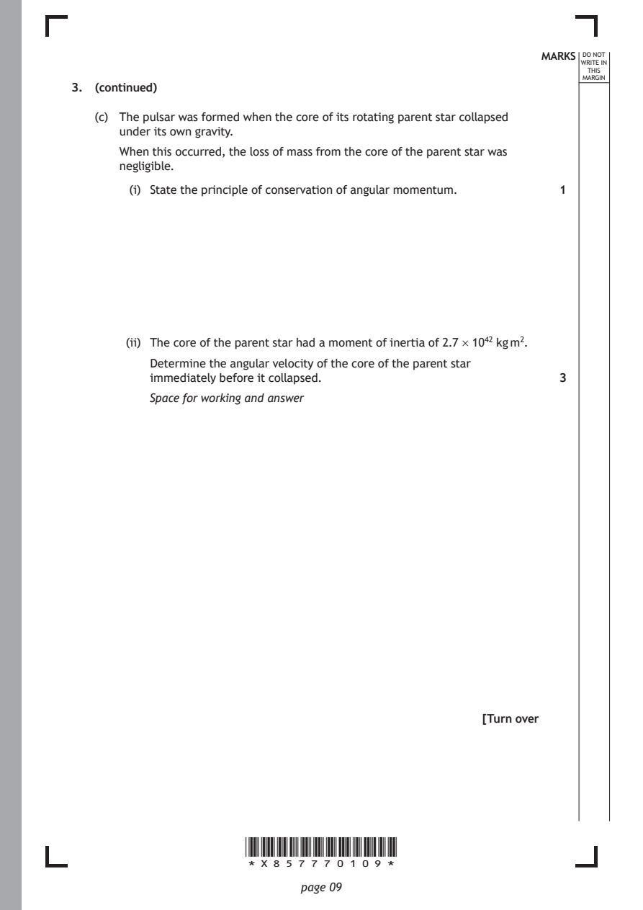
Selectable page text
MARKS _{W}^{D}_{R}^{O}_{I} _{T}^{N}OT
E IN
THIS
MARGIN
3. (continued)
(c) The pulsar was formed when the core of its rotating parent star collapsed
under its own gravity.
When this occurred, the loss of mass from the core of the parent star was
negligible.
(i) State the principle of conservation of angular momentum. 1
(ii) The core of the parent star had a moment of inertia of 2.7 × 10⁴² kg m².
Determine the angular velocity of the core of the parent star
immediately before it collapsed. 3
Space for working and answer
[Turn over
*X857770109*
page 09PDF page 10
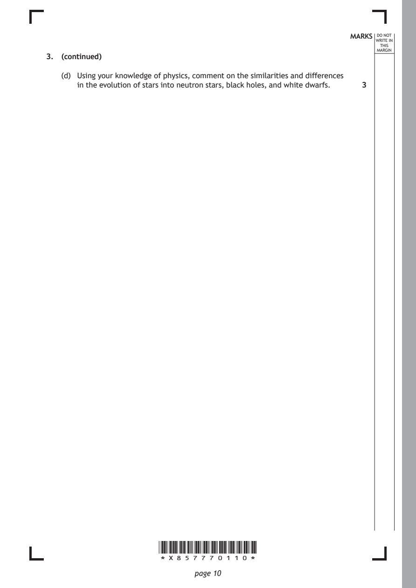
Selectable page text
MARKS _{W}^{D}_{R}^{O}_{I} _{T}^{N}OT
E IN
THIS
MARGIN
3. (continued)
(d) Using your knowledge of physics, comment on the similarities and differences
in the evolution of stars into neutron stars, black holes, and white dwarfs. 3
*X857770110*
page 10PDF page 11
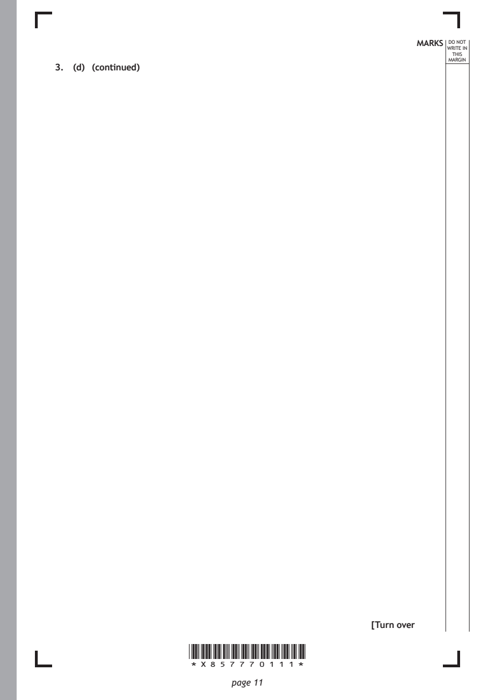
Selectable page text
MARKS _{W}^{D}_{R}^{O}_{I} _{T}^{N}OT
E IN
THIS
MARGIN
3. (d) (continued)
[Turn over
*X857770111*
page 11PDF page 12
Question 4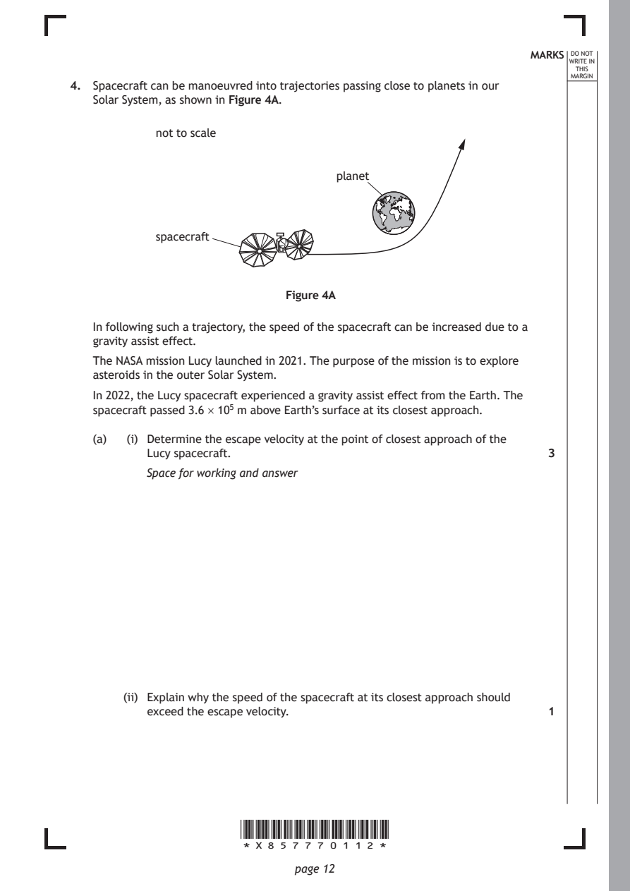
Selectable page text
MARKS _{W}^{D}_{R}^{O}_{I} _{T}^{N}OT
E IN
THIS
MARGIN
4. Spacecraft can be manoeuvred into trajectories passing close to planets in our
Solar System, as shown in Figure 4A.
not to scale
planet
spacecraft
Figure 4A
In following such a trajectory, the speed of the spacecraft can be increased due to a
gravity assist effect.
The NASA mission Lucy launched in 2021. The purpose of the mission is to explore
asteroids in the outer Solar System.
In 2022, the Lucy spacecraft experienced a gravity assist effect from the Earth. The
spacecraft passed 3.6 × 10⁵ m above Earth’s surface at its closest approach.
(a) (i) Determine the escape velocity at the point of closest approach of the
Lucy spacecraft. 3
Space for working and answer
(ii) Explain why the speed of the spacecraft at its closest approach should
exceed the escape velocity. 1
*X857770112*
page 12PDF page 13
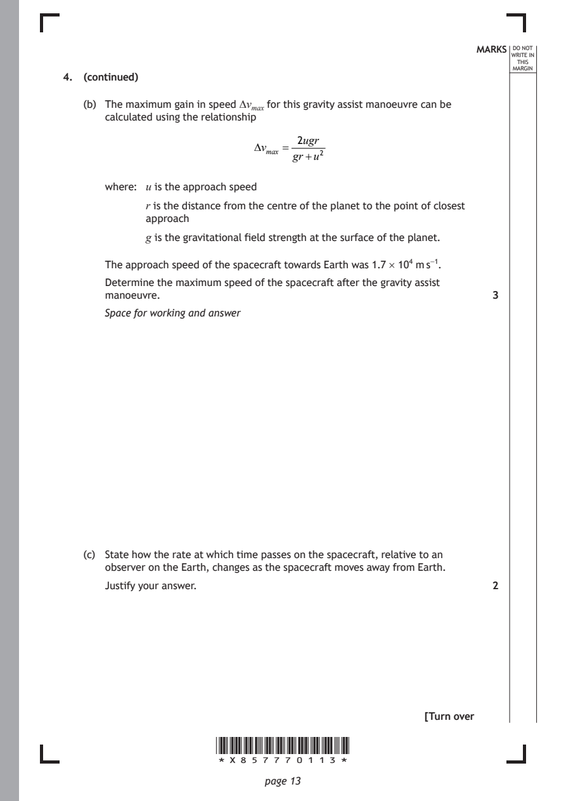
Selectable page text
MARKS _{W}^{D}_{R}^{O}_{I} _{T}^{N}OT
E IN
THIS
MARGIN
4. (continued)
(b) The maximum gain in speed ∆vₘ for this gravity assist manoeuvre can be
calculated using the relationship^{a}^{x}
2ugr
vₘₐₓ =
gr+u²
where: u is the approach speed
r is the distance from the centre of the planet to the point of closest
approach
g is the gravitational field strength at the surface of the planet.
The approach speed of the spacecraft towards Earth was 1.7 × 10⁴ m s⁻¹.
Determine the maximum speed of the spacecraft after the gravity assist
manoeuvre. 3
Space for working and answer
(c) State how the rate at which time passes on the spacecraft, relative to an
observer on the Earth, changes as the spacecraft moves away from Earth.
Justify your answer. 2
[Turn over
*X857770113*
page 13PDF page 14
Question 5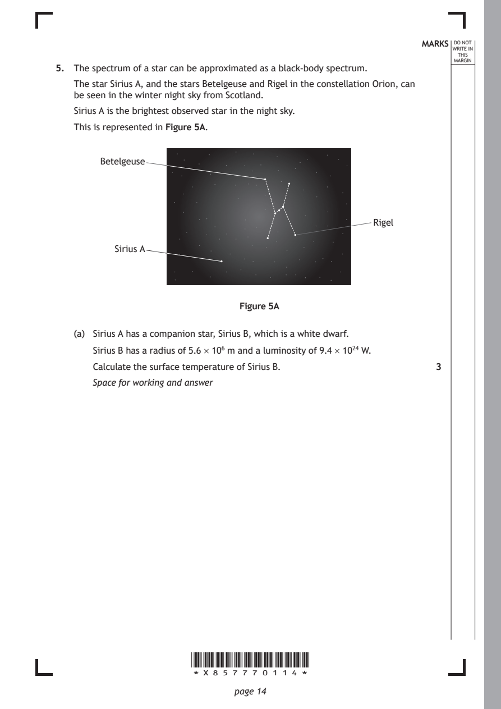
Selectable page text
MARKS _{W}^{D}_{R}^{O}_{I} _{T}^{N}OT
E IN
THIS
MARGIN
5. The spectrum of a star can be approximated as a black-body spectrum.
The star Sirius A, and the stars Betelgeuse and Rigel in the constellation Orion, can
be seen in the winter night sky from Scotland.
Sirius A is the brightest observed star in the night sky.
This is represented in Figure 5A.
Betelgeuse
Rigel
Sirius A
Figure 5A
(a) Sirius A has a companion star, Sirius B, which is a white dwarf.
Sirius B has a radius of 5.6 × 10⁶ m and a luminosity of 9.4 × 10²⁴ W.
Calculate the surface temperature of Sirius B. 3
Space for working and answer
*X857770114*
page 14PDF page 15
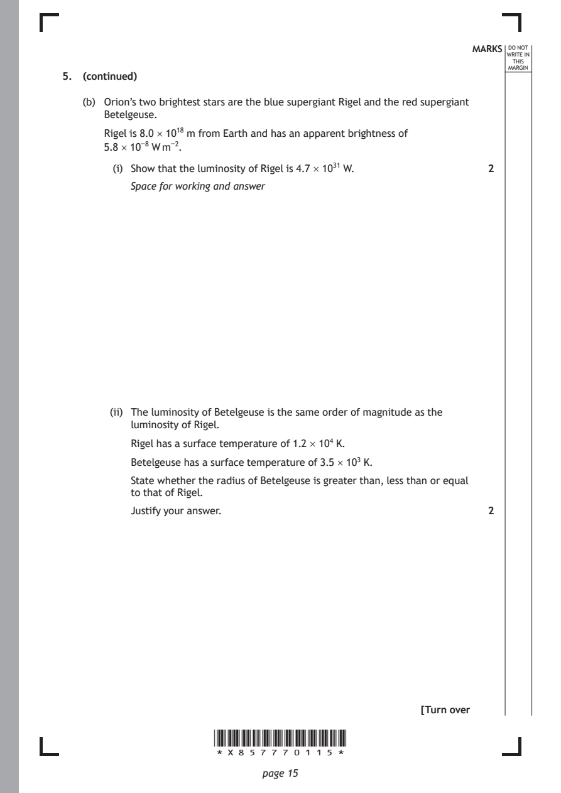
Selectable page text
MARKS _{W}^{D}_{R}^{O}_{I} _{T}^{N}OT
E IN
THIS
MARGIN
5. (continued)
(b) Orion’s two brightest stars are the blue supergiant Rigel and the red supergiant
Betelgeuse.
Rigel is 8.0 × 10¹⁸ m from Earth and has an apparent brightness of
5.8 × 10⁻⁸ W m⁻².
(i) Show that the luminosity of Rigel is 4.7 × 10³¹ W. 2
Space for working and answer
(ii) The luminosity of Betelgeuse is the same order of magnitude as the
luminosity of Rigel.
Rigel has a surface temperature of 1.2 × 10⁴ K.
Betelgeuse has a surface temperature of 3.5 × 10³ K.
State whether the radius of Betelgeuse is greater than, less than or equal
to that of Rigel.
Justify your answer. 2
[Turn over
*X857770115*
page 15PDF page 16
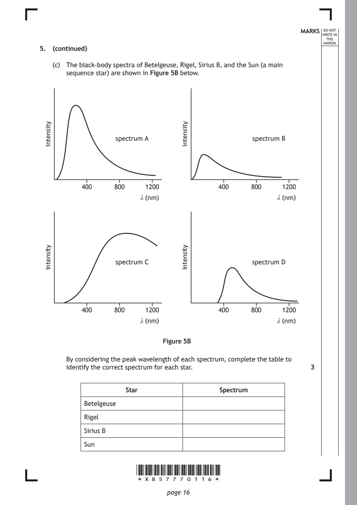
Selectable page text
MARKS _{W}^{D}_{R}^{O}_{I} _{T}^{N}OT
E IN
THIS
MARGIN
5. (continued)
(c) The black-body spectra of Betelgeuse, Rigel, Sirius B, and the Sun (a main
sequence star) are shown in Figure 5B below.
spectrum A
400 800
*X857770116*
page 16
ytisnetni
spectrum B
1200 400 800
λ (nm)
ytisnetni
1200
λ (nm)
spectrum C
400 800
ytisnetni
spectrum D
1200 400 800
λ (nm)
ytisnetni
1200
λ (nm)
Figure 5B
By considering the peak wavelength of each spectrum, complete the table to
identify the correct spectrum for each star. 3
Star Spectrum
Betelgeuse
Rigel
Sirius B
SunPDF page 17
Question 6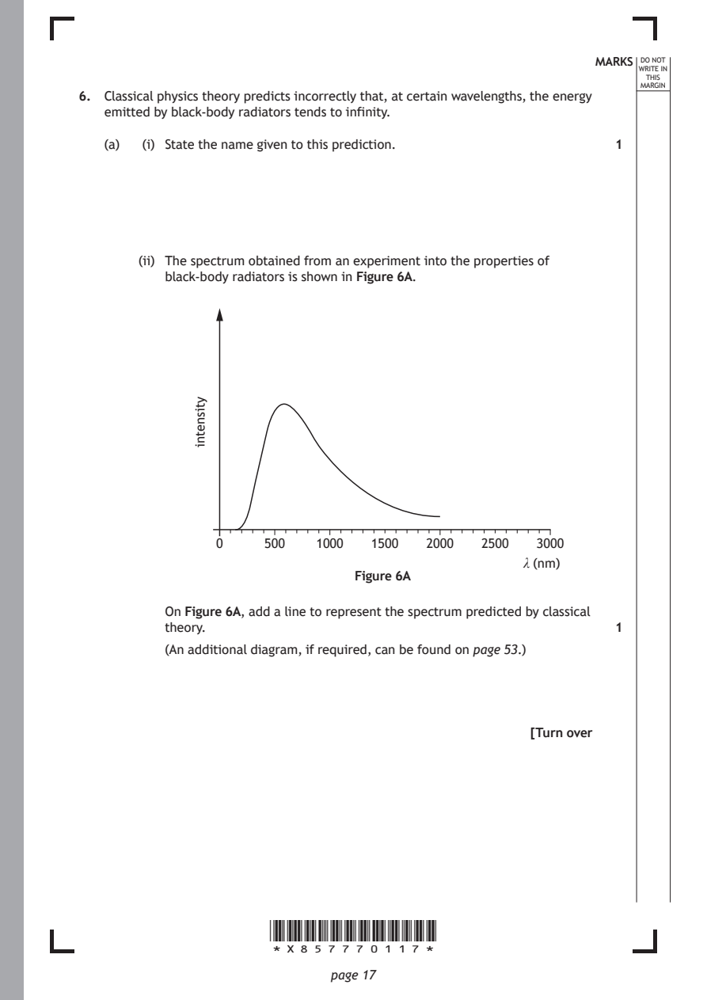
Selectable page text
MARKS _{W}^{D}_{R}^{O}_{I} _{T}^{N}OT
E IN
THIS
MARGIN
6. Classical physics theory predicts incorrectly that, at certain wavelengths, the energy
emitted by black-body radiators tends to infinity.
(a) (i) State the name given to this prediction.
(ii) The spectrum obtained from an experiment into the properties of
black-body radiators is shown in Figure 6A.
*X857770117*
page 17
ytisnetni
1
0 500 1000 1500 2000 2500 3000
λ (nm)
Figure 6A
On Figure 6A, add a line to represent the spectrum predicted by classical
theory. 1
(An additional diagram, if required, can be found on page 53.)
[Turn overPDF page 18
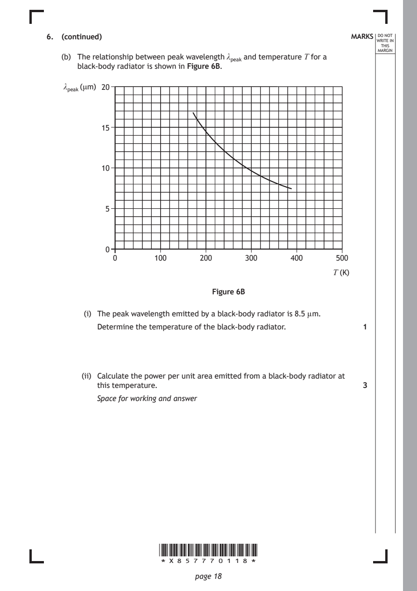
Selectable page text
6. (continued) MARKS _{W}^{D}_{R}^{O}_{I} _{T}^{N}OT
E IN
THIS
MARGIN
(b) The relationship between peak wavelength λₚₑₐₖ and temperature T for a
black-body radiator is shown in Figure 6B.
λₚₑₐₖ(μm) 20
15
10
5
0
0 100 200 300 400 500
T (K)
Figure 6B
(i) The peak wavelength emitted by a black-body radiator is 8.5 µm.
Determine the temperature of the black-body radiator. 1
(ii) Calculate the power per unit area emitted from a black-body radiator at
this temperature. 3
Space for working and answer
*X857770118*
page 18PDF page 19
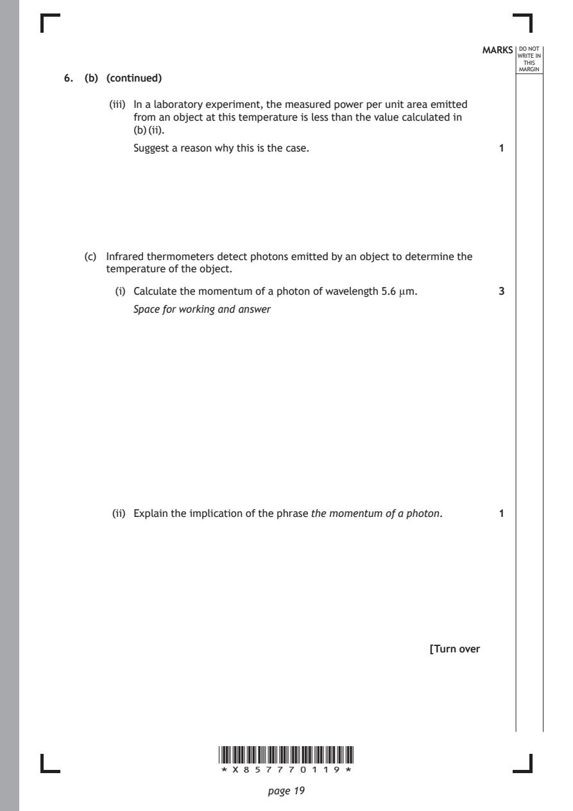
Selectable page text
MARKS _{W}^{D}_{R}^{O}_{I} _{T}^{N}OT
E IN
THIS
MARGIN
6. (b) (continued)
(iii) In a laboratory experiment, the measured power per unit area emitted
from an object at this temperature is less than the value calculated in
(b) (ii).
Suggest a reason why this is the case. 1
(c) Infrared thermometers detect photons emitted by an object to determine the
temperature of the object.
(i) Calculate the momentum of a photon of wavelength 5.6 µm. 3
Space for working and answer
(ii) Explain the implication of the phrase the momentum of a photon. 1
[Turn over
*X857770119*
page 19PDF page 20
Question 7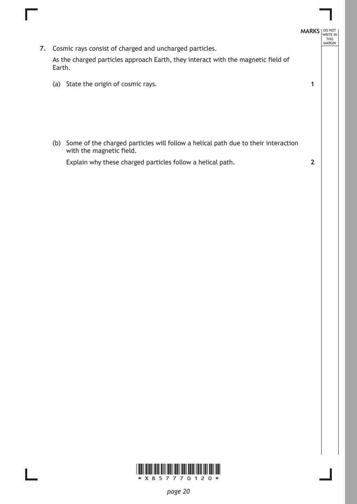
Selectable page text
MARKS _{W}^{D}_{R}^{O}_{I} _{T}^{N}OT
E IN
THIS
MARGIN
7. Cosmic rays consist of charged and uncharged particles.
As the charged particles approach Earth, they interact with the magnetic field of
Earth.
(a) State the origin of cosmic rays. 1
(b) Some of the charged particles will follow a helical path due to their interaction
with the magnetic field.
Explain why these charged particles follow a helical path. 2
*X857770120*
page 20PDF page 21
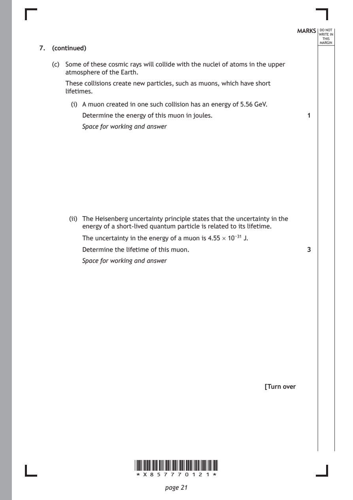
Selectable page text
MARKS _{W}^{D}_{R}^{O}_{I} _{T}^{N}OT
E IN
THIS
MARGIN
7. (continued)
(c) Some of these cosmic rays will collide with the nuclei of atoms in the upper
atmosphere of the Earth.
These collisions create new particles, such as muons, which have short
lifetimes.
(i) A muon created in one such collision has an energy of 5.56 GeV.
Determine the energy of this muon in joules. 1
Space for working and answer
(ii) The Heisenberg uncertainty principle states that the uncertainty in the
energy of a short-lived quantum particle is related to its lifetime.
The uncertainty in the energy of a muon is 4.55 × 10⁻³¹ J.
Determine the lifetime of this muon. 3
Space for working and answer
[Turn over
*X857770121*
page 21PDF page 22
Question 8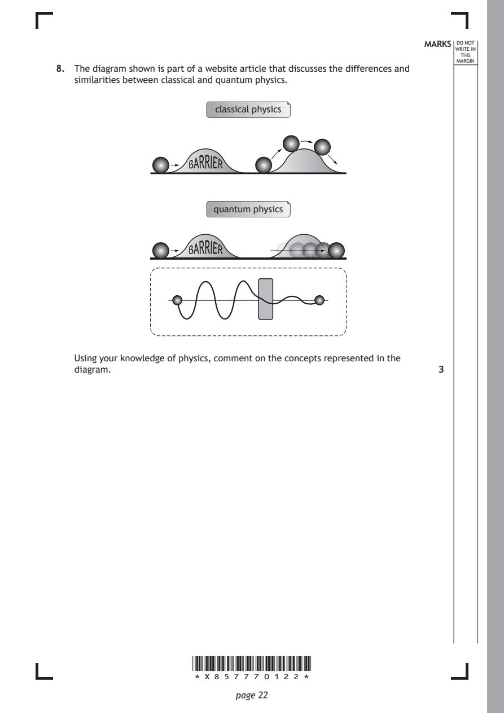
Selectable page text
MARKS _{W}^{D}_{R}^{O}_{I} _{T}^{N}OT
E IN
THIS
MARGIN
8. The diagram shown is part of a website article that discusses the differences and
similarities between classical and quantum physics.
classical physics
BARRIER
quantum physics
BARRIER
Using your knowledge of physics, comment on the concepts represented in the
diagram. 3
*X857770122*
page 22PDF page 23
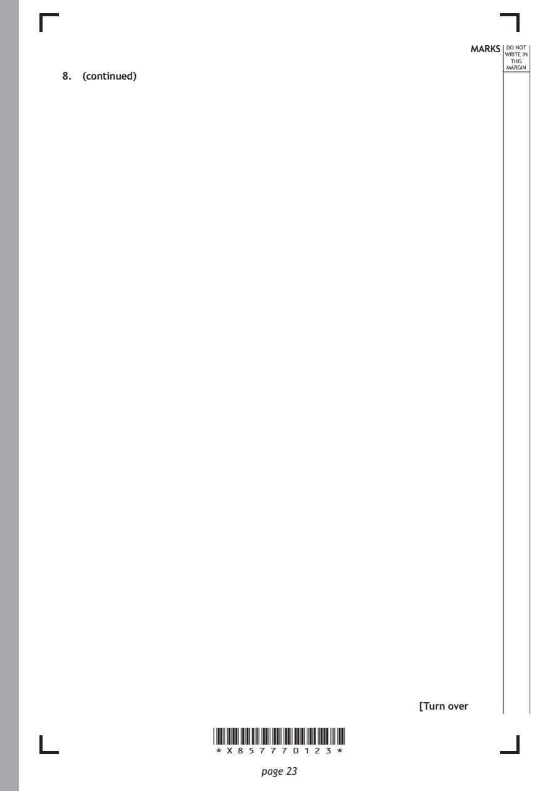
Selectable page text
MARKS _{W}^{D}_{R}^{O}_{I} _{T}^{N}OT
E IN
THIS
MARGIN
8. (continued)
[Turn over
*X857770123*
page 23PDF page 24
Question 9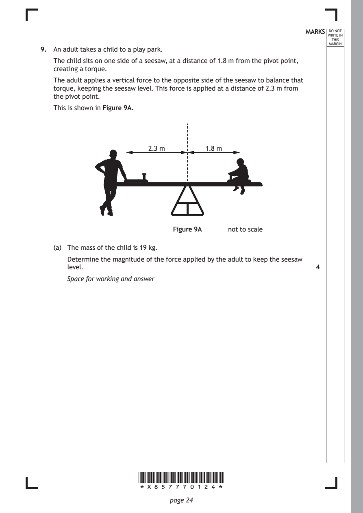
Selectable page text
MARKS _{W}^{D}_{R}^{O}_{I} _{T}^{N}OT
E IN
THIS
MARGIN
9. An adult takes a child to a play park.
The child sits on one side of a seesaw, at a distance of 1.8 m from the pivot point,
creating a torque.
The adult applies a vertical force to the opposite side of the seesaw to balance that
torque, keeping the seesaw level. This force is applied at a distance of 2.3 m from
the pivot point.
This is shown in Figure 9A.
2.3 m 1.8 m
Figure 9A not to scale
(a) The mass of the child is 19 kg.
Determine the magnitude of the force applied by the adult to keep the seesaw
level. 4
Space for working and answer
*X857770124*
page 24PDF page 25
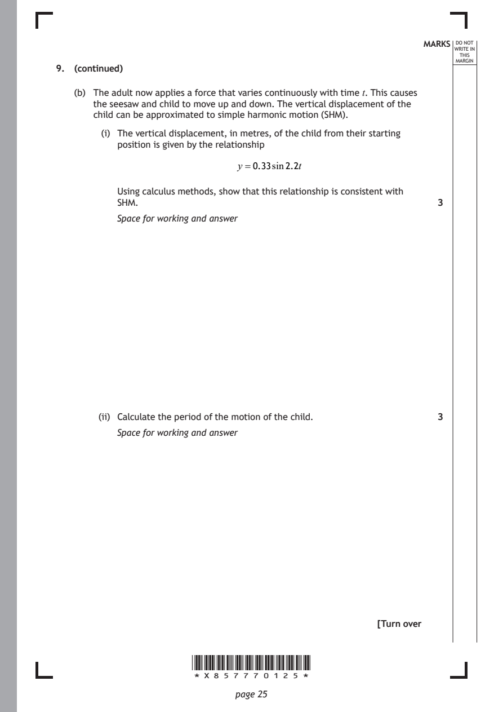
Selectable page text
MARKS _{W}^{D}_{R}^{O}_{I} _{T}^{N}OT
E IN
THIS
MARGIN
9. (continued)
(b) The adult now applies a force that varies continuously with time t. This causes
the seesaw and child to move up and down. The vertical displacement of the
child can be approximated to simple harmonic motion (SHM).
(i) The vertical displacement, in metres, of the child from their starting
position is given by the relationship
y =0.33sin2.2t
Using calculus methods, show that this relationship is consistent with
SHM. 3
Space for working and answer
(ii) Calculate the period of the motion of the child. 3
Space for working and answer
[Turn over
*X857770125*
page 25PDF page 26
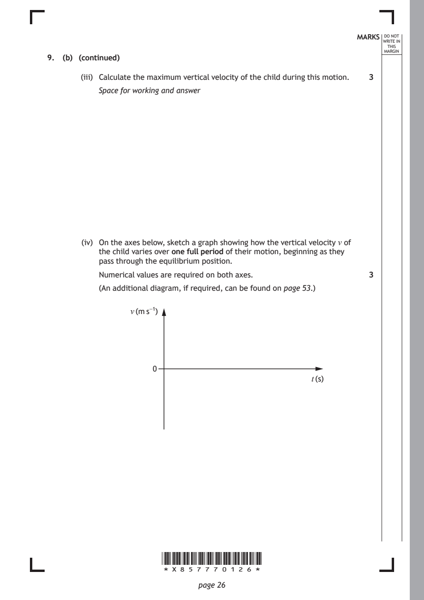
Selectable page text
MARKS _{W}^{D}_{R}^{O}_{I} _{T}^{N}OT
E IN
THIS
MARGIN
9. (b) (continued)
(iii) Calculate the maximum vertical velocity of the child during this motion. 3
Space for working and answer
(iv) On the axes below, sketch a graph showing how the vertical velocity v of
the child varies over one full period of their motion, beginning as they
pass through the equilibrium position.
Numerical values are required on both axes. 3
(An additional diagram, if required, can be found on page 53.)
v (m s⁻¹)
0
t (s)
*X857770126*
page 26PDF page 27
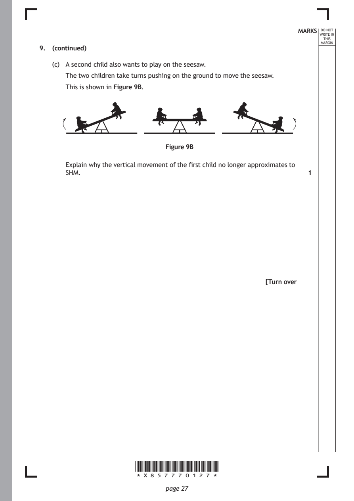
Selectable page text
MARKS _{W}^{D}_{R}^{O}_{I} _{T}^{N}OT
E IN
THIS
MARGIN
9. (continued)
(c) A second child also wants to play on the seesaw.
The two children take turns pushing on the ground to move the seesaw.
This is shown in Figure 9B.
Figure 9B
Explain why the vertical movement of the first child no longer approximates to
SHM. 1
[Turn over
*X857770127*
page 27PDF page 28
Question 10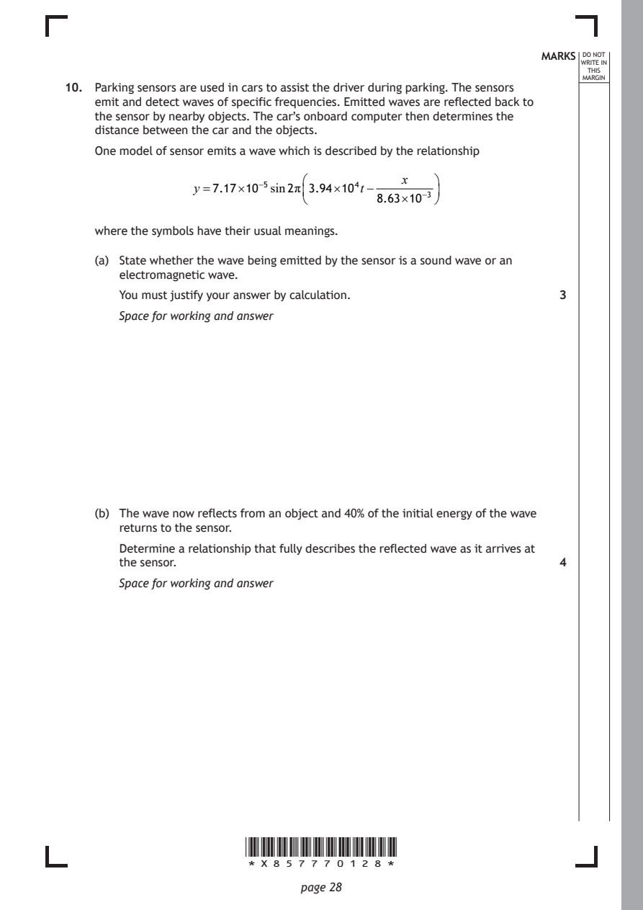
Selectable page text
MARKS _{W}^{D}_{R}^{O}_{I} _{T}^{N}OT
E IN
THIS
MARGIN
10. Parking sensors are used in cars to assist the driver during parking. The sensors
emit and detect waves of specific frequencies. Emitted waves are reflected back to
the sensor by nearby objects. The car’s onboard computer then determines the
distance between the car and the objects.
One model of sensor emits a wave which is described by the relationship
x
y =7.17×10⁻⁵sin2π3.94×10⁴t−
8.63×10⁻³
where the symbols have their usual meanings.
(a) State whether the wave being emitted by the sensor is a sound wave or an
electromagnetic wave.
You must justify your answer by calculation. 3
Space for working and answer
(b) The wave now reflects from an object and 40% of the initial energy of the wave
returns to the sensor.
Determine a relationship that fully describes the reflected wave as it arrives at
the sensor. 4
Space for working and answer
*X857770128*
page 28PDF page 29
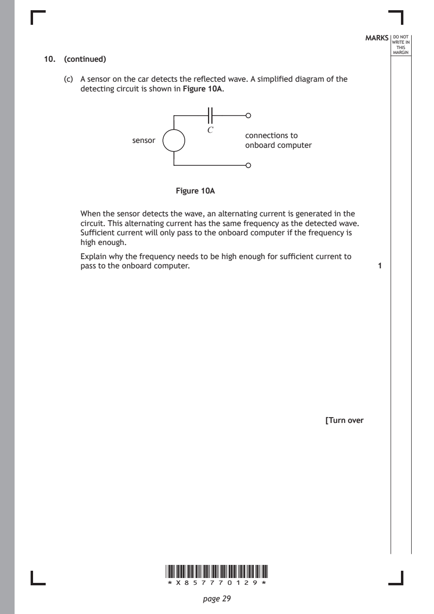
Selectable page text
MARKS _{W}^{D}_{R}^{O}_{I} _{T}^{N}OT
E IN
THIS
MARGIN
10. (continued)
(c) A sensor on the car detects the reflected wave. A simplified diagram of the
detecting circuit is shown in Figure 10A.
C
connections to
sensor
onboard computer
Figure 10A
When the sensor detects the wave, an alternating current is generated in the
circuit. This alternating current has the same frequency as the detected wave.
Sufficient current will only pass to the onboard computer if the frequency is
high enough.
Explain why the frequency needs to be high enough for sufficient current to
pass to the onboard computer. 1
[Turn over
*X857770129*
page 29PDF page 30
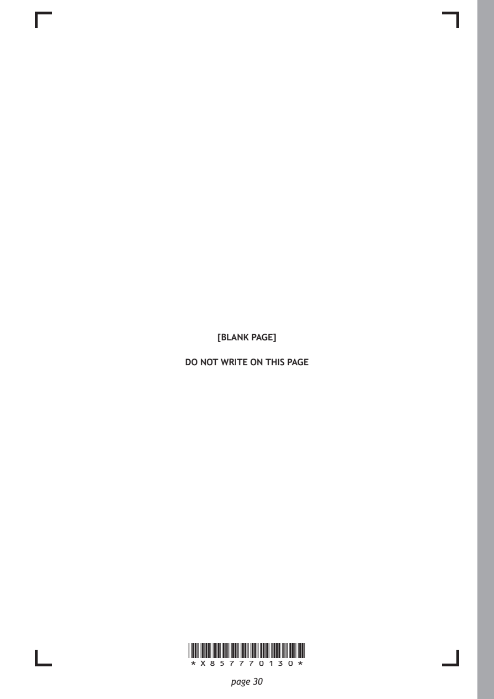
Selectable page text
[BLANK PAGE]
DO NOT WRITE ON THIS PAGE
*X857770130*
page 30PDF page 31
Question 11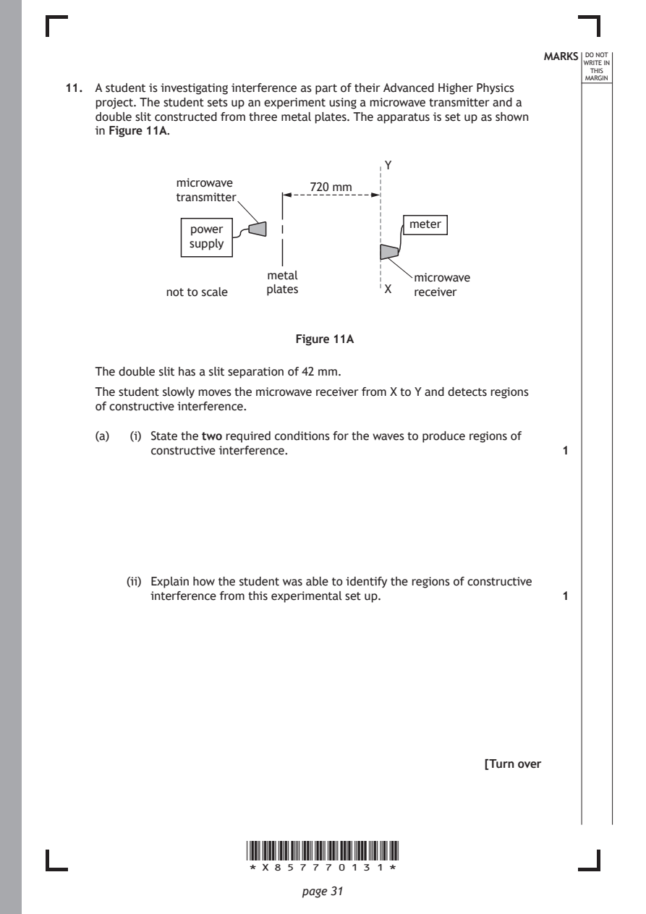
Selectable page text
MARKS _{W}^{D}_{R}^{O}_{I} _{T}^{N}OT
E IN
THIS
MARGIN
11. A student is investigating interference as part of their Advanced Higher Physics
project. The student sets up an experiment using a microwave transmitter and a
double slit constructed from three metal plates. The apparatus is set up as shown
in Figure 11A.
Y
microwave
720 mm
transmitter
meter
power
supply
metal microwave
not to scale plates X receiver
Figure 11A
The double slit has a slit separation of 42 mm.
The student slowly moves the microwave receiver from X to Y and detects regions
of constructive interference.
(a) (i) State the two required conditions for the waves to produce regions of
constructive interference. 1
(ii) Explain how the student was able to identify the regions of constructive
interference from this experimental set up. 1
[Turn over
*X857770131*
page 31PDF page 32
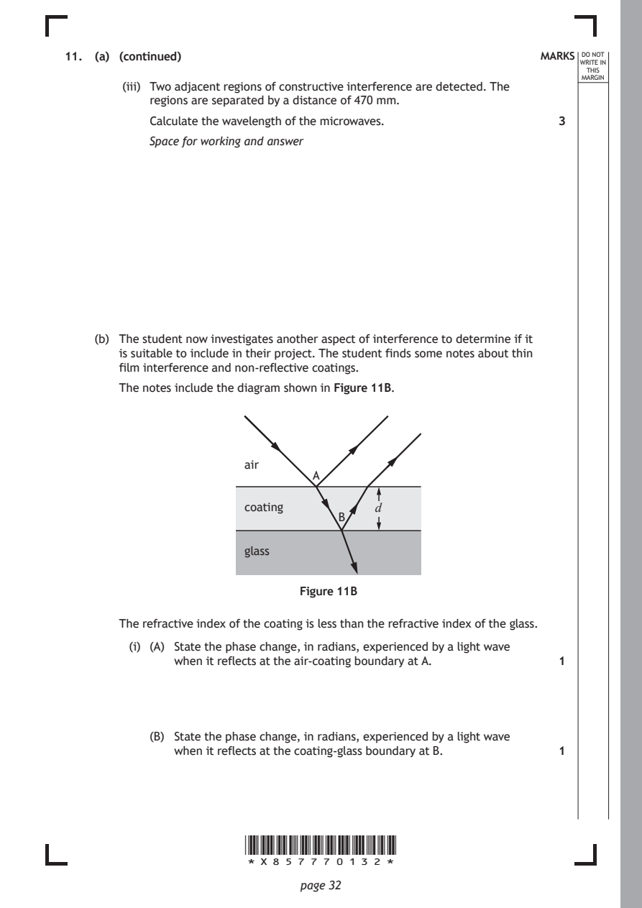
Selectable page text
11. (a) (continued) MARKS _{W}^{D}_{R}^{O}_{I} _{T}^{N}OT
E IN
THIS
MARGIN
(iii) Two adjacent regions of constructive interference are detected. The
regions are separated by a distance of 470 mm.
Calculate the wavelength of the microwaves. 3
Space for working and answer
(b) The student now investigates another aspect of interference to determine if it
is suitable to include in their project. The student finds some notes about thin
film interference and non-reflective coatings.
The notes include the diagram shown in Figure 11B.
air
A
coating d
B
glass
Figure 11B
The refractive index of the coating is less than the refractive index of the glass.
(i) (A) State the phase change, in radians, experienced by a light wave
when it reflects at the air-coating boundary at A. 1
(B) State the phase change, in radians, experienced by a light wave
when it reflects at the coating-glass boundary at B. 1
*X857770132*
page 32PDF page 33
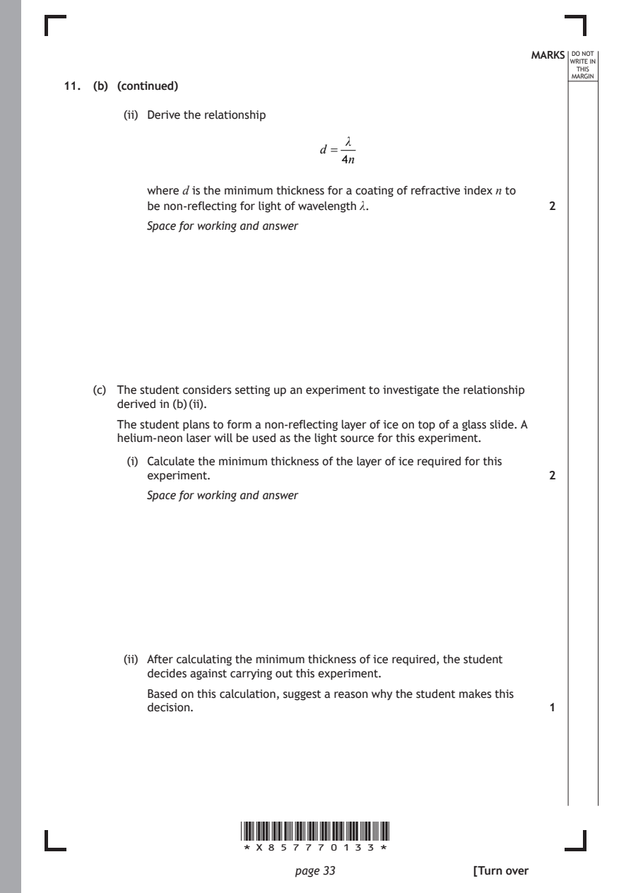
Selectable page text
MARKS _{W}^{D}_{R}^{O}_{I} _{T}^{N}OT
E IN
THIS
MARGIN
11. (b) (continued)
(ii) Derive the relationship
λ
d =
4n
where d is the minimum thickness for a coating of refractive index n to
be non-reflecting for light of wavelength λ. 2
Space for working and answer
(c) The student considers setting up an experiment to investigate the relationship
derived in (b) (ii).
The student plans to form a non-reflecting layer of ice on top of a glass slide. A
helium-neon laser will be used as the light source for this experiment.
(i) Calculate the minimum thickness of the layer of ice required for this
experiment. 2
Space for working and answer
(ii) After calculating the minimum thickness of ice required, the student
decides against carrying out this experiment.
Based on this calculation, suggest a reason why the student makes this
decision. 1
*X857770133*
page 33 [Turn overPDF page 34
Question 12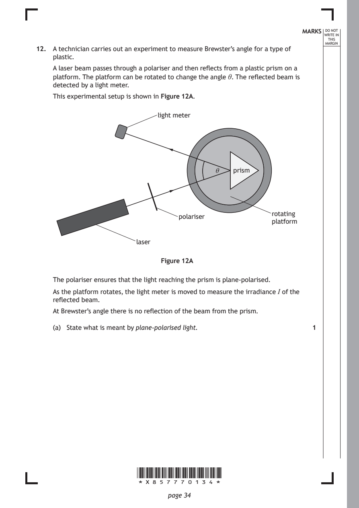
Selectable page text
MARKS _{W}^{D}_{R}^{O}_{I} _{T}^{N}OT
E IN
THIS
MARGIN
12. A technician carries out an experiment to measure Brewster’s angle for a type of
plastic.
A laser beam passes through a polariser and then reflects from a plastic prism on a
platform. The platform can be rotated to change the angle θ. The reflected beam is
detected by a light meter.
This experimental setup is shown in Figure 12A.
light meter
θ prism
rotating
polariser
platform
laser
Figure 12A
The polariser ensures that the light reaching the prism is plane-polarised.
As the platform rotates, the light meter is moved to measure the irradiance I of the
reflected beam.
At Brewster’s angle there is no reflection of the beam from the prism.
(a) State what is meant by plane‑polarised light. 1
*X857770134*
page 34PDF page 35
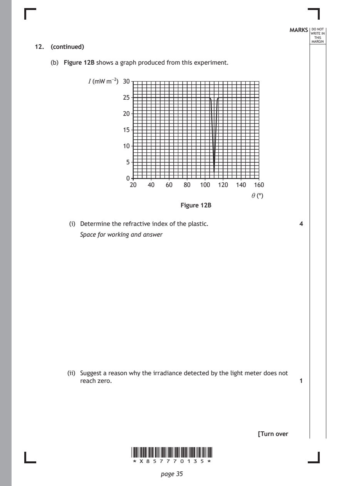
Selectable page text
MARKS _{W}^{D}_{R}^{O}_{I} _{T}^{N}OT
E IN
THIS
MARGIN
12. (continued)
(b) Figure 12B shows a graph produced from this experiment.
I (mW m⁻²) 30
25
20
15
10
5
0
20 40 60 80 100 120 140 160
θ (°)
Figure 12B
(i) Determine the refractive index of the plastic. 4
Space for working and answer
(ii) Suggest a reason why the irradiance detected by the light meter does not
reach zero. 1
[Turn over
*X857770135*
page 35PDF page 36
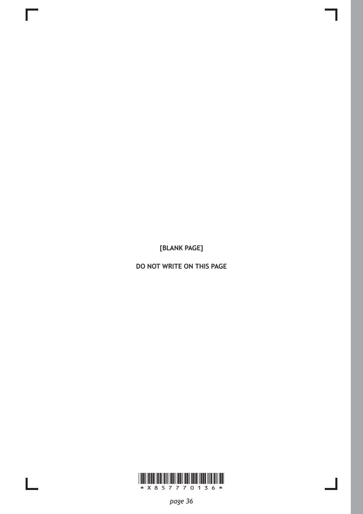
Selectable page text
[BLANK PAGE]
DO NOT WRITE ON THIS PAGE
*X857770136*
page 36PDF page 37
Question 13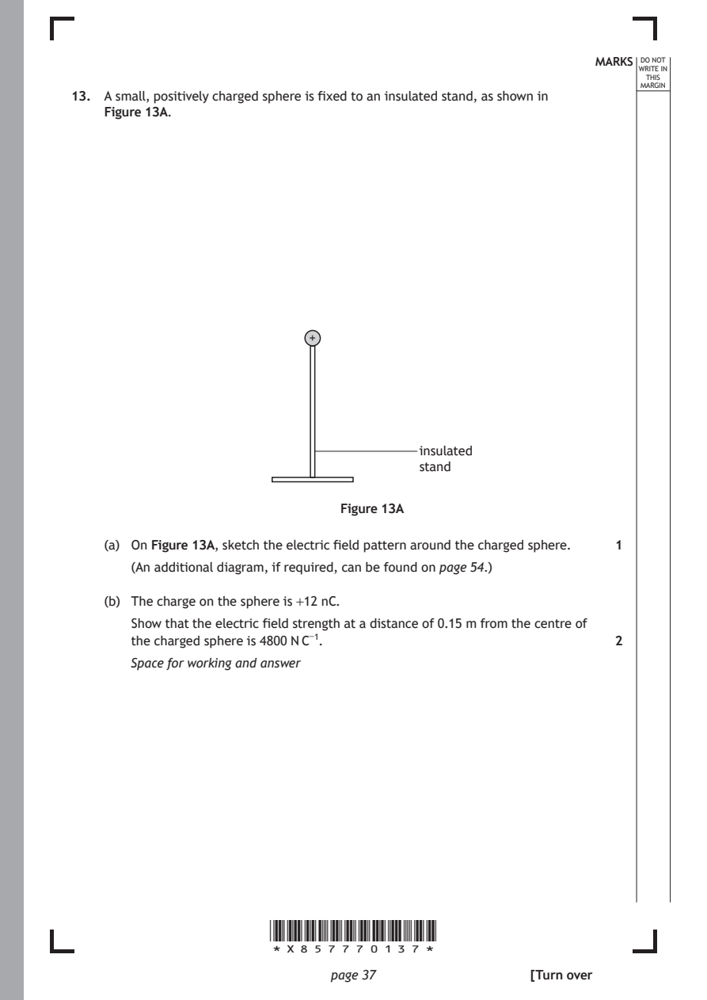
Selectable page text
MARKS _{W}^{D}_{R}^{O}_{I} _{T}^{N}OT
E IN
THIS
MARGIN
13. A small, positively charged sphere is fixed to an insulated stand, as shown in
Figure 13A.
+
insulated
stand
Figure 13A
(a) On Figure 13A, sketch the electric field pattern around the charged sphere. 1
(An additional diagram, if required, can be found on page 54.)
(b) The charge on the sphere is +12 nC.
Show that the electric field strength at a distance of 0.15 m from the centre of
the charged sphere is 4800 N C⁻¹. 2
Space for working and answer
*X857770137*
page 37 [Turn overPDF page 38
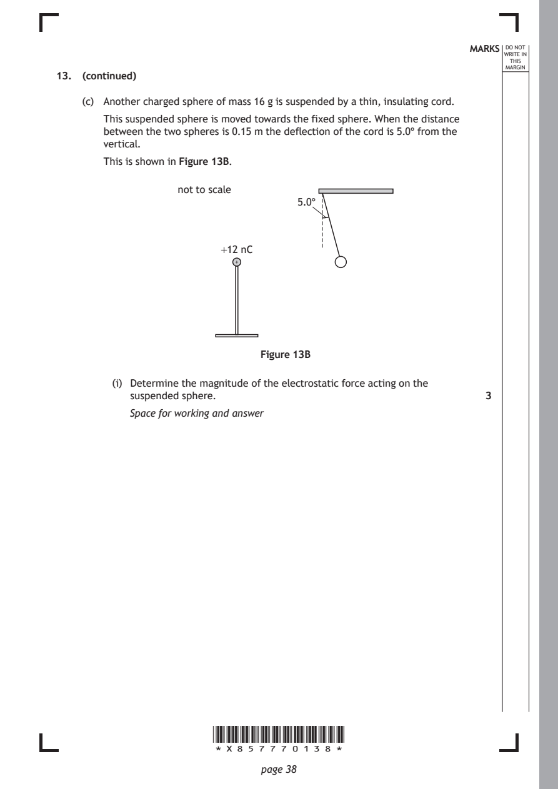
Selectable page text
MARKS _{W}^{D}_{R}^{O}_{I} _{T}^{N}OT
E IN
THIS
MARGIN
13. (continued)
(c) Another charged sphere of mass 16 g is suspended by a thin, insulating cord.
This suspended sphere is moved towards the fixed sphere. When the distance
between the two spheres is 0.15 m the deflection of the cord is 5.0° from the
vertical.
This is shown in Figure 13B.
not to scale
5.0°
+12 nC
+
Figure 13B
(i) Determine the magnitude of the electrostatic force acting on the
suspended sphere. 3
Space for working and answer
*X857770138*
page 38PDF page 39
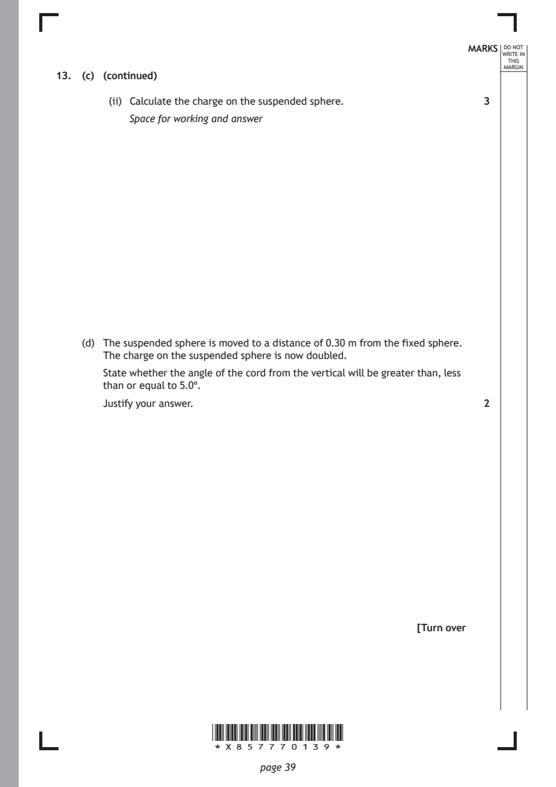
Selectable page text
MARKS _{W}^{D}_{R}^{O}_{I} _{T}^{N}OT
E IN
THIS
MARGIN
13. (c) (continued)
(ii) Calculate the charge on the suspended sphere. 3
Space for working and answer
(d) The suspended sphere is moved to a distance of 0.30 m from the fixed sphere.
The charge on the suspended sphere is now doubled.
State whether the angle of the cord from the vertical will be greater than, less
than or equal to 5.0°.
Justify your answer. 2
[Turn over
*X857770139*
page 39PDF page 40
Question 14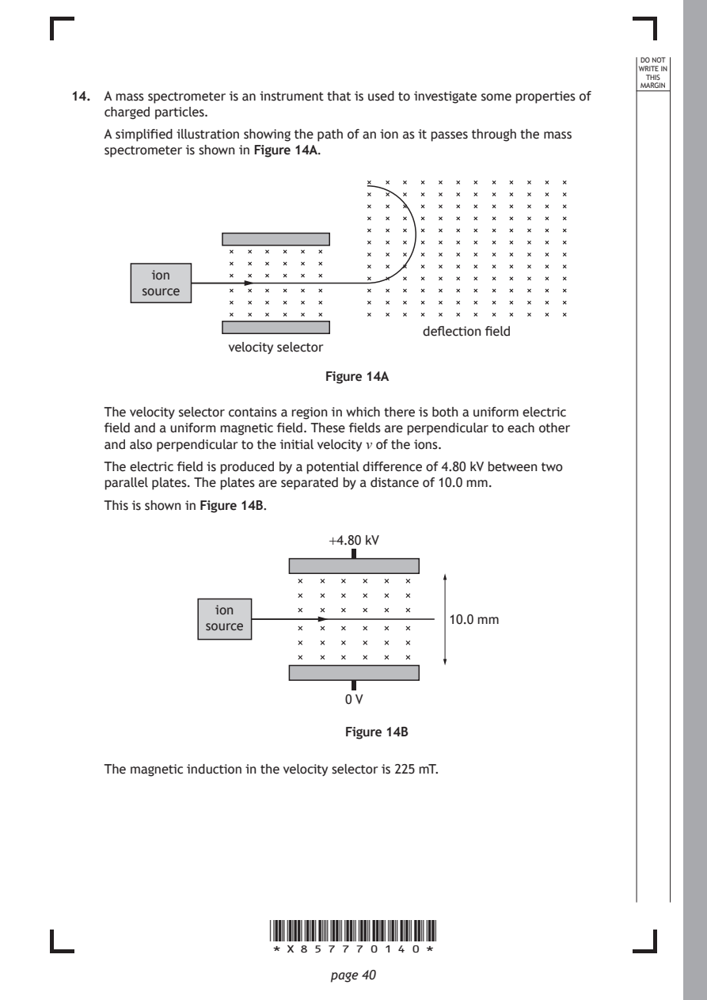
Selectable page text
DO NOT
WRITE IN
THIS
MARGIN
14. A mass spectrometer is an instrument that is used to investigate some properties of
charged particles.
A simplified illustration showing the path of an ion as it passes through the mass
spectrometer is shown in Figure 14A.
ion
source
deflection field
velocity selector
Figure 14A
The velocity selector contains a region in which there is both a uniform electric
field and a uniform magnetic field. These fields are perpendicular to each other
and also perpendicular to the initial velocity v of the ions.
The electric field is produced by a potential difference of 4.80 kV between two
parallel plates. The plates are separated by a distance of 10.0 mm.
This is shown in Figure 14B.
+4.80 kV
ion
10.0 mm
source
0 V
Figure 14B
The magnetic induction in the velocity selector is 225 mT.
*X857770140*
page 40PDF page 41
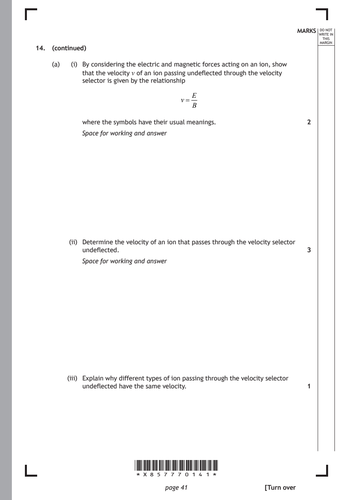
Selectable page text
MARKS _{W}^{D}_{R}^{O}_{I} _{T}^{N}OT
E IN
THIS
MARGIN
14. (continued)
(a) (i) By considering the electric and magnetic forces acting on an ion, show
that the velocity v of an ion passing undeflected through the velocity
selector is given by the relationship
E
v=
B
where the symbols have their usual meanings. 2
Space for working and answer
(ii) Determine the velocity of an ion that passes through the velocity selector
undeflected. 3
Space for working and answer
(iii) Explain why different types of ion passing through the velocity selector
undeflected have the same velocity. 1
*X857770141*
page 41 [Turn overPDF page 42
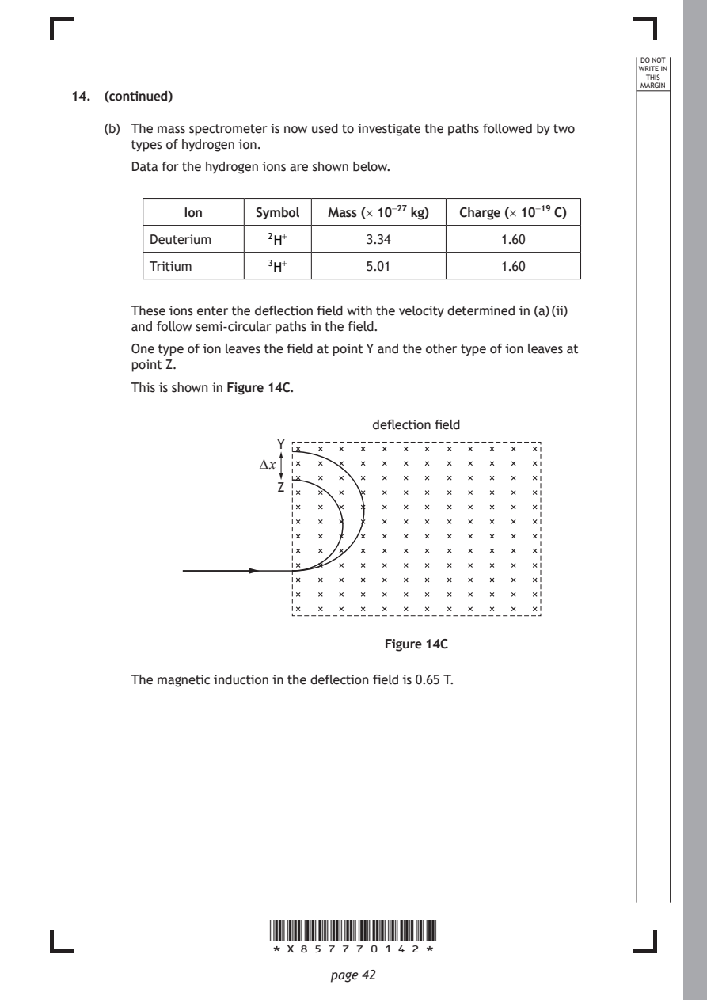
Selectable page text
DO NOT
WRITE IN
THIS
MARGIN
14. (continued)
(b) The mass spectrometer is now used to investigate the paths followed by two
types of hydrogen ion.
Data for the hydrogen ions are shown below.
Ion Symbol Mass (× 10⁻²⁷ kg) Charge (× 10⁻¹⁹ C)
Deuterium 2H⁺ 3.34 1.60
Tritium 3H⁺ 5.01 1.60
These ions enter the deflection field with the velocity determined in (a) (ii)
and follow semi-circular paths in the field.
One type of ion leaves the field at point Y and the other type of ion leaves at
point Z.
This is shown in Figure 14C.
deflection field
Y
∆ x
Z
Figure 14C
The magnetic induction in the deflection field is 0.65 T.
*X857770142*
page 42PDF page 43
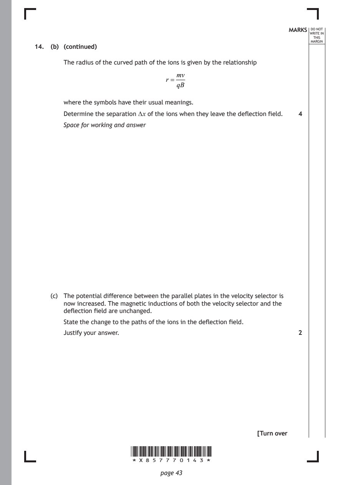
Selectable page text
MARKS _{W}^{D}_{R}^{O}_{I} _{T}^{N}OT
E IN
THIS
MARGIN
14. (b) (continued)
The radius of the curved path of the ions is given by the relationship
mv
r =
qB
where the symbols have their usual meanings.
Determine the separation ∆ x of the ions when they leave the deflection field. 4
Space for working and answer
(c) The potential difference between the parallel plates in the velocity selector is
now increased. The magnetic inductions of both the velocity selector and the
deflection field are unchanged.
State the change to the paths of the ions in the deflection field.
Justify your answer. 2
[Turn over
*X857770143*
page 43PDF page 44
Question 15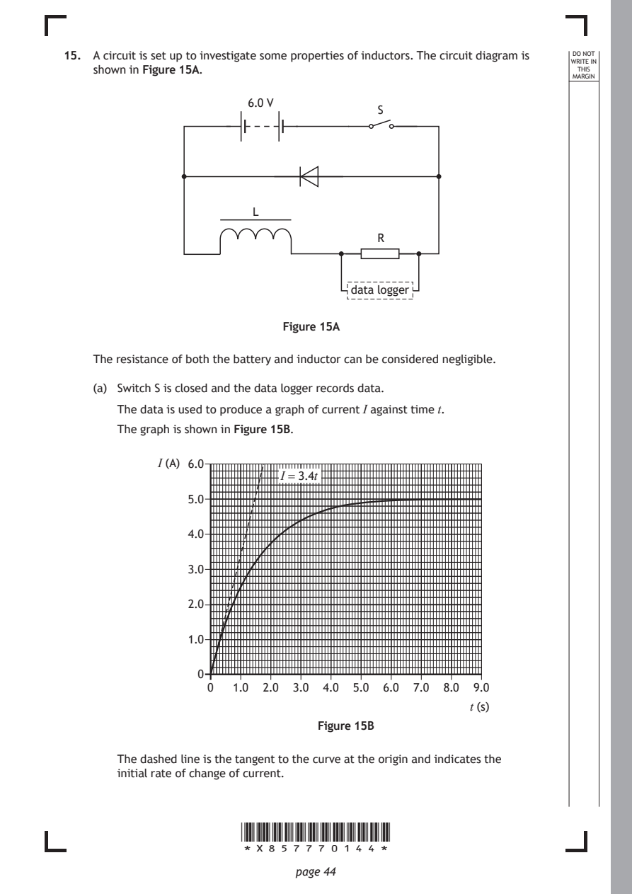
Selectable page text
15. A circuit is set up to investigate some properties of inductors. The circuit diagram is DO NOT
WRITE IN
shown in Figure 15A. THIS
MARGIN
6.0 V
S
L
R
data logger
Figure 15A
The resistance of both the battery and inductor can be considered negligible.
(a) Switch S is closed and the data logger records data.
The data is used to produce a graph of current I against time t.
The graph is shown in Figure 15B.
I (A) 6.0
I = 3.4t
5.0
4.0
3.0
2.0
1.0
0
0 1.0 2.0 3.0 4.0 5.0 6.0 7.0 8.0 9.0
t (s)
Figure 15B
The dashed line is the tangent to the curve at the origin and indicates the
initial rate of change of current.
*X857770144*
page 44PDF page 45
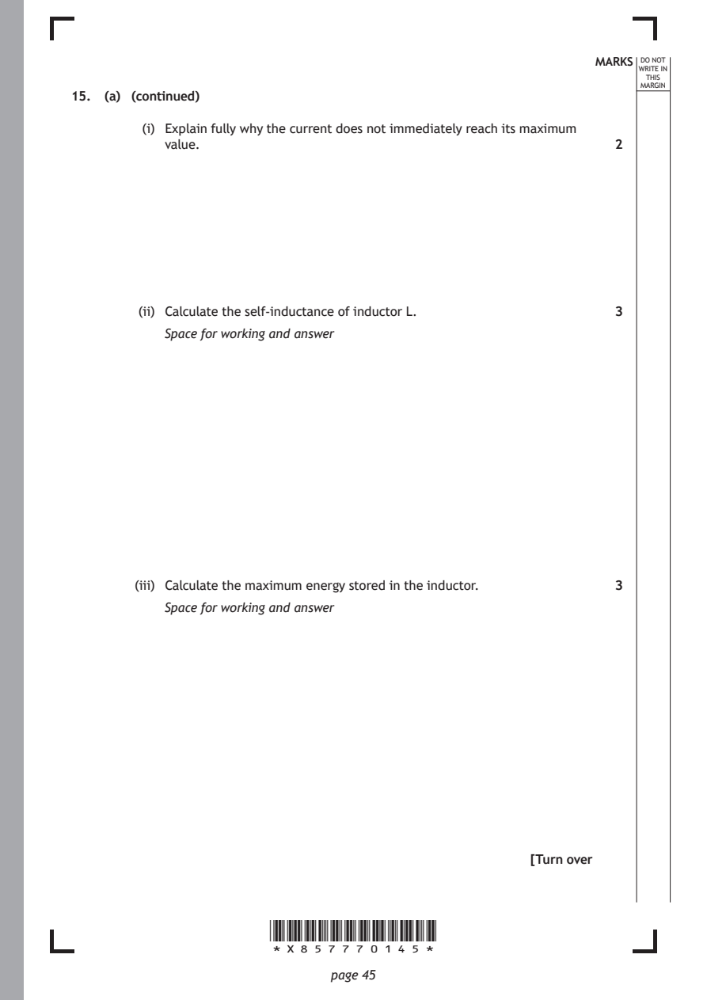
Selectable page text
MARKS _{W}^{D}_{R}^{O}_{I} _{T}^{N}OT
E IN
THIS
MARGIN
15. (a) (continued)
(i) Explain fully why the current does not immediately reach its maximum
value. 2
(ii) Calculate the self-inductance of inductor L. 3
Space for working and answer
(iii) Calculate the maximum energy stored in the inductor. 3
Space for working and answer
[Turn over
*X857770145*
page 45PDF page 46
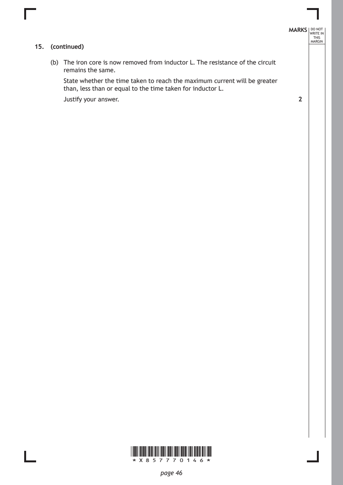
Selectable page text
MARKS _{W}^{D}_{R}^{O}_{I} _{T}^{N}OT
E IN
THIS
MARGIN
15. (continued)
(b) The iron core is now removed from inductor L. The resistance of the circuit
remains the same.
State whether the time taken to reach the maximum current will be greater
than, less than or equal to the time taken for inductor L.
Justify your answer. 2
*X857770146*
page 46PDF page 47
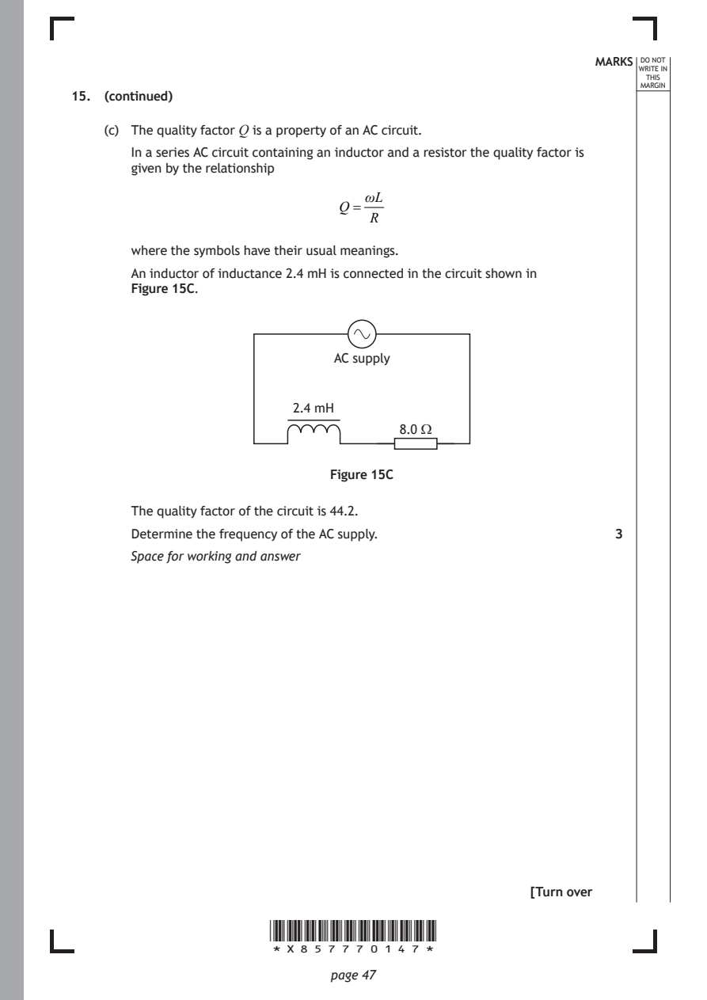
Selectable page text
MARKS _{W}^{D}_{R}^{O}_{I} _{T}^{N}OT
E IN
THIS
MARGIN
15. (continued)
(c) The quality factor Q is a property of an AC circuit.
In a series AC circuit containing an inductor and a resistor the quality factor is
given by the relationship
ωL
Q=
R
where the symbols have their usual meanings.
An inductor of inductance 2.4 mH is connected in the circuit shown in
Figure 15C.
AC supply
2.4 mH
8.0 Ω
Figure 15C
The quality factor of the circuit is 44.2.
Determine the frequency of the AC supply. 3
Space for working and answer
[Turn over
*X857770147*
page 47PDF page 48
Question 16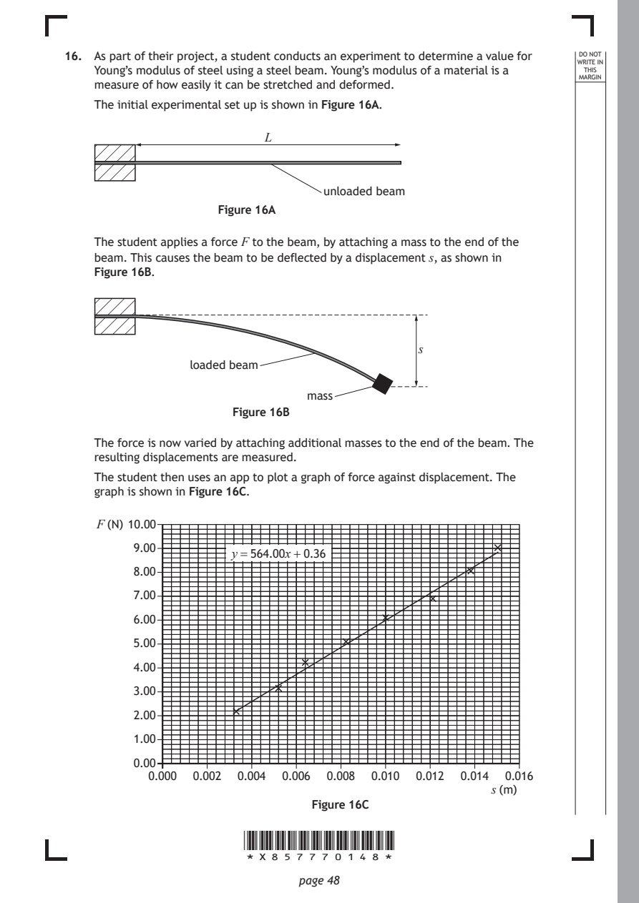
Selectable page text
16. As part of their project, a student conducts an experiment to determine a value for DO NOT
WRITE IN
Young’s modulus of steel using a steel beam. Young’s modulus of a material is a THIS
MARGIN
measure of how easily it can be stretched and deformed.
The initial experimental set up is shown in Figure 16A.
L
unloaded beam
Figure 16A
The student applies a force F to the beam, by attaching a mass to the end of the
beam. This causes the beam to be deflected by a displacement s, as shown in
Figure 16B.
s
loaded beam
mass
Figure 16B
The force is now varied by attaching additional masses to the end of the beam. The
resulting displacements are measured.
The student then uses an app to plot a graph of force against displacement. The
graph is shown in Figure 16C.
F (N) 10.00
9.00
y = 564.00x + 0.36
8.00
7.00
6.00
5.00
4.00
3.00
2.00
1.00
0.00
0.000 0.002 0.004 0.006 0.008 0.010 0.012 0.014 0.016
s (m)
Figure 16C
*X857770148*
page 48PDF page 49
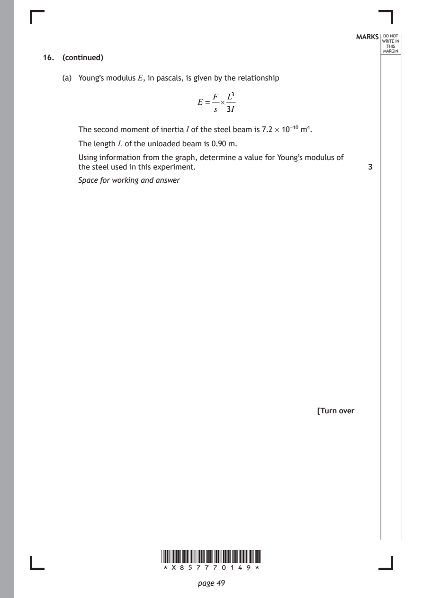
Selectable page text
MARKS _{W}^{D}_{R}^{O}_{I} _{T}^{N}OT
E IN
THIS
MARGIN
16. (continued)
(a) Young’s modulus E, in pascals, is given by the relationship
F L³
E = ×
s 3I
The second moment of inertia I of the steel beam is 7.2 × 10⁻¹⁰ m⁴.
The length L of the unloaded beam is 0.90 m.
Using information from the graph, determine a value for Young’s modulus of
the steel used in this experiment. 3
Space for working and answer
[Turn over
*X857770149*
page 49PDF page 50
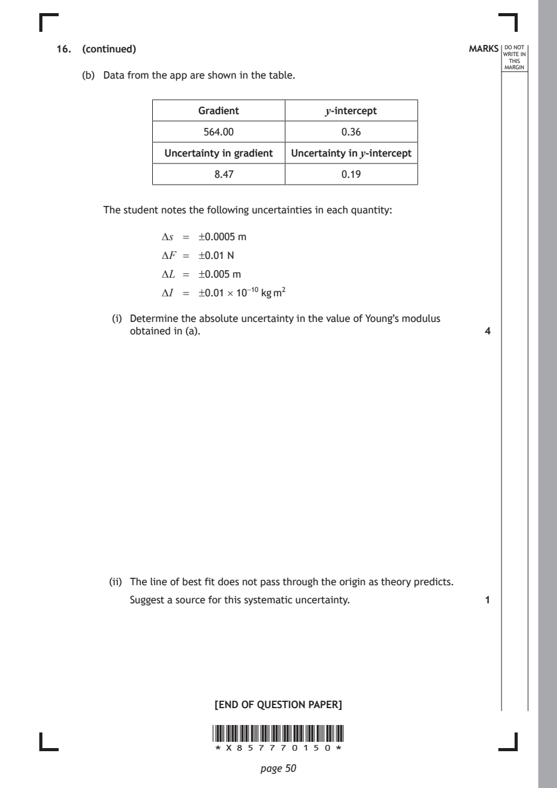
Selectable page text
16. (continued) MARKS _{W}^{D}_{R}^{O}_{I} _{T}^{N}OT
E IN
THIS
MARGIN
(b) Data from the app are shown in the table.
Gradient y-intercept
564.00 0.36
Uncertainty in gradient Uncertainty in y-intercept
8.47 0.19
The student notes the following uncertainties in each quantity:
∆ s = ±0.0005 m
∆ F = ±0.01 N
∆ L = ±0.005 m
∆ I = ±0.01 × 10⁻¹⁰ kg m²
(i) Determine the absolute uncertainty in the value of Young’s modulus
obtained in (a). 4
(ii) The line of best fit does not pass through the origin as theory predicts.
Suggest a source for this systematic uncertainty. 1
[END OF QUESTION PAPER]
*X857770150*
page 50PDF page 51
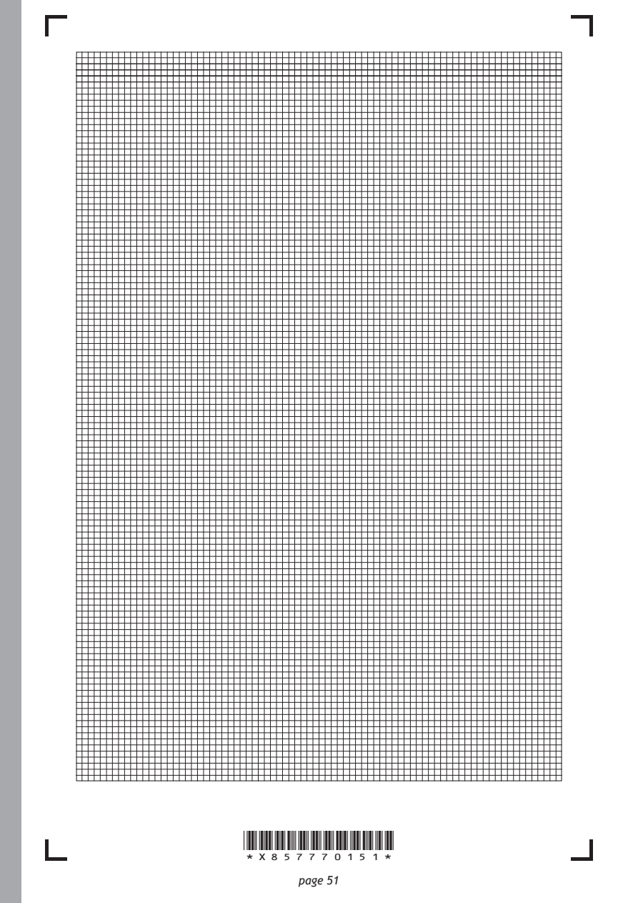
Selectable page text
*X857770151*
page 51PDF page 52
Selectable page text
*X857770152*
page 52PDF page 53
Selectable page text
MARKS _{W}^{D}_{R}^{O}_{I} _{T}^{N}OT
E IN
THIS
MARGIN
ADDITIONAL SPACE FOR ANSWERS AND ROUGH WORK
Additional diagram for use with question 6 (a) (ii)
*X857770153*
page 53
ytisnetni
0 500 1000 1500 2000 2500 3000
λ (nm)
Figure 6A
Additional diagram for use with question 9 (b) (iv)
v (m s⁻¹)
0
t (s)PDF page 54
Selectable page text
MARKS _{W}^{D}_{R}^{O}_{I} _{T}^{N}OT
E IN
THIS
MARGIN
ADDITIONAL SPACE FOR ANSWERS AND ROUGH WORK
Additional diagram for use with question 13 (a)
+
insulated
stand
Figure 13A
*X857770154*
page 54PDF page 55
Selectable page text
MARKS _{W}^{D}_{R}^{O}_{I} _{T}^{N}OT
E IN
THIS
MARGIN
ADDITIONAL SPACE FOR ANSWERS AND ROUGH WORK
*X857770155*
page 55PDF page 56
Selectable page text
MARKS _{W}^{D}_{R}^{O}_{I} _{T}^{N}OT
E IN
THIS
MARGIN
ADDITIONAL SPACE FOR ANSWERS AND ROUGH WORK
Acknowledgement of copyright
Question 3 ART-ur/shutterstock.com
*X857770156*
page 56